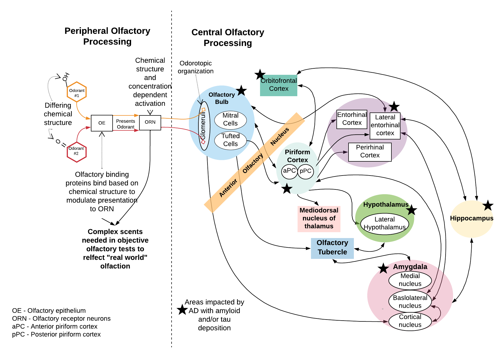

Olfaction and neurocognition are strongly linked. The areas of the brain involved in olfactory processing have significant overlap with critical structures involved in thinking.
The abnormal amyloid and tau proteins associated with Alzheimer’s disease deposit in the olfactory bulb prior to the onset of detectable cognitive decline. The olfactory bulb is where the olfactory receptor neurons coming up from the nose and relaying signals about smell first synapse in the brain. As such, it makes sense that olfaction would decline early. In patients with mild cognitive impairment, the regions where these abnormal proteins are deposited are more confined. In dementia, there is widespread involvement and progresses to involve areas critical for cognition like the entorhinal cortex and hippocampus.
In contrast to other tests, olfaction can be assessed without the need for painful tests or costly procedures.
This is why we are pioneering olfaction as a noninvasive biomarker for Alzheimer’s disease and dementia with a user-friendly test that was designed by a physician to be ideal for use in the primary care, speciality clinic, or at-home setting.
The Affordable, Rapid, Olfactory Measurement Array (AROMA) is the flagship product of AROMA Sensory Diagnostics & Therapeutics. We began prototyping and clinically deploying AROMA in 2016. Since then, we have published peer-reviewed manuscripts (see The Science page for list of relevant peer-reviewed scientific published manuscripts) validating the science behind AROMA and how it compares to other commonly used, commercially available tests of olfaction. The correlation of AROMA to these tests is strong. In fact, AROMA correlates more strongly to people’s self-rated sense of smell and is a more difficult and sensitive test. We believe this is why we are succeeding in so accurately using AROMA, plus our machine learning algorithms, to predict cognitive decline and disease.
Our approach has been scientifically vetted by the National Institutes of Health via a five-year, R01 award (R01AG072624). The primary investigator of this $3.8 million total award is our CEO Dr. Villwock.
We have been actively researching olfaction (AKA sense of smell) for years! Our prior studies have demonstrated the strong link between sensory function and brain function and serve as the strong foundation for our current active research. This includes a five-year National Institutes of Health R01 grant - total award $3.8 million; funded through 2027 - whose primary investigator is our CEO, Dr. Villwock. These grants are awarded to “mature research projects that are hypothesis-driven with strong preliminary data” and have a direct benefit to public health. The results of R01 grants are often the foundation of best practices and clinical standards of care.
Our work has included validating AROMA against other commercially available tests as well as deploying it in over 1000 patients ranging from healthy subjects to those with diseases ranging from dementia to long-haul COVID-19 to nasal polyps.
We have demonstrated the ability of our methods and machine learning algorithms to predict, with 100% sensitivity and nearly 90% accuracy, patients who are healthy elders versus those with mild cognitive impairment (MCI). When given the more difficult task of predicting MCI versus Alzheimer’s disease, we continue to see 100% sensitivity and 87.5% accuracy. Our research has also demonstrated that multisensory dysfunction - issues with olfaction, hearing, and balance - increases the likelihood of cognitive issues. In a study we published in 2022, people with multisensory dysfunction of three senses had an 15.7X risk of having cognitive impairment!
For additional information about our work, check out the following featured publications: